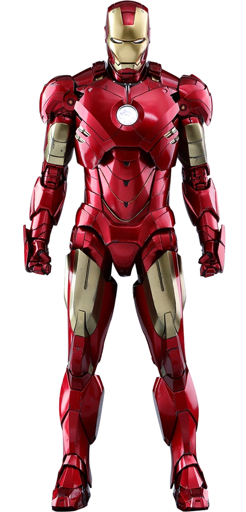

PELICULA
Tony Stark, es un multimillonario empresario y filántropo estadounidense e ingenioso científico, que sufrió una grave lesión en el pecho durante un secuestro en el Medio Oriente.
Cuando sus captores intentaron forzarlo a construir un arma de destrucción masiva, elaboró, en cambio, una armadura para salvar su vida y escapar del cautiverio.
más tarde, Stark desarrolla su traje, agregando armas y otros dispositivos tecnológicos que diseñaba a través de su compañía, Industrias Stark. Stark usa el traje y las versiones sucesivas para proteger al mundo como Iron Man
Aunque al principio ocultó su verdadera identidad, Stark finalmente declaró quién era en un anuncio público
Desde su lanzamiento, Iron Man se convirtió en uno de los personajes más queridos de Marvel Cómics. Asimismo, la interpretación de Robert Downey Jr. en el Universo Cinematográfico de Marvel ayudó muchísimo a que el personaje se potencie aún más
ARMADURA
Iron Man posee una armadura motorizada. Lo curioso de dicha armadura es que le brindará fuerza, durabilidad sobrehumana, gran variedad de armas y la posibilidad de poder volar. Las armas del traje fueron cambiando con los años; sin embargo, las armas ofensivas estándar de Iron Man siempre fueron los rayos repulsores que se disparan desde las palmas de sus guantes. Otras armas que fueron incorporándose en varias versiones de la armadura son: el proyector de haz único en su pecho; un generador de impulsos electromagnéticos; y un escudo de energía defensivo que puede extenderse hasta 360 grados. Por otra parte, además del modelo de uso general que usa Iron Man, Stark también desarrolló varios trajes especializados para viajes espaciales, buceo en aguas profundas y otros propósitos especiales.
HABILIDADES
No hay dudas que Tony Stark es un genio que tiene mucha experiencia en los campos de las matemáticas, la física, la química y la informática.
Un detalle no menor es que la experiencia en ingeniería eléctrica e ingeniería mecánica que posee el personaje logra superar a Reed Richards, Hank Pym y Bruce Banner.
Por otra parte, Iron Man es considerado uno de los personajes más inteligentes que tiene Marvel. Dicho esto, cabe resaltar que Tony Stark se graduó con títulos avanzados en física e ingeniería a la edad de 17 años en el Instituto de Tecnología de Massachusetts (MIT). Su experiencia se extiende a su ingenio para enfrentar situaciones difíciles, donde logra utilizar las herramientas disponibles, incluido su traje, de manera poco ortodoxa pero sumamente efectiva.